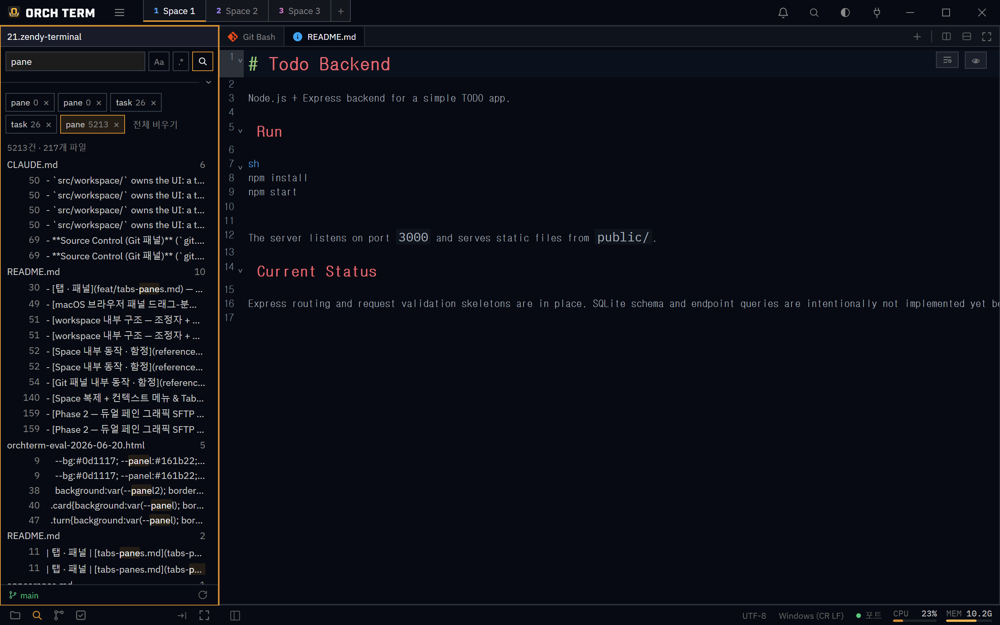
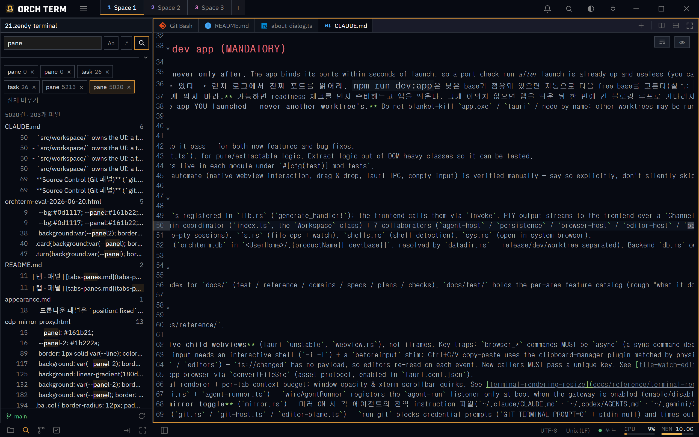

핵심 기능 · 전체 파일 검색
전체 파일 검색
활성 프로젝트 루트 아래 모든 파일의 내용을 한 번에 검색합니다. 평문·정규식·대소문자 구분과 include/exclude glob을 지원하고, .gitignore를 자동으로 따르며, 결과를 들어오는 대로 실시간으로 채웁니다.
열기 — Ctrl+Shift+F
Ctrl+Shift+F로 사이드바를 Search 뷰로 전환합니다(사이드바 아래 모드바에서 Files · Search · Git을 직접 오갈 수도 있습니다). 검색어를 입력하고 Enter 또는 돋보기를 누르면 시작됩니다. Aa로 대소문자 구분, .*로 정규식을 켜며, 정규식이 꺼져 있으면 입력은 그대로(리터럴) 매칭됩니다.

Aa·.* 토글, 세부 옵션의 include/exclude glob. ② 파일별 그룹 + 줄별 매치 — 하이라이트 클릭 시 에디터로 점프.include / exclude glob · 무시 규칙
세부 옵션( 토글)을 펼치면 include·exclude glob(쉼표로 여러 개)과 .gitignore 무시 포함 체크박스가 나타납니다. include가 비면 .gitignore만 적용되지만, include를 하나라도 넣으면 그 glob에 해당하는 파일만 검색하는 화이트리스트가 되고 exclude는 그 안에서 제외합니다. 세부 옵션을 접어도 입력값과 필터는 그대로 적용됩니다.
include=*.ts, exclude=*.test.ts → .ts 파일 중 .test.ts를 뺀 나머지. include가 비어 있을 때와 결과 범위가 달라지니 주의하세요.기본적으로 .gitignore·.ignore에 든 파일과 5MB 초과·바이너리 파일은 건너뜁니다(node_modules 같은 무시 폴더가 결과에 새지 않습니다). .gitignore 무시 포함을 체크하면 무시 규칙을 모두 꺼 전부 검색합니다.
스트리밍 누적 결과 탭
검색을 시작하면 새 탭이 ⟳와 함께 생기고, 결과가 들어오는 대로 파일별·줄별로 누적됩니다. 완료되면 ⟳가 사라집니다. 탭마다 그때의 검색 조건이 보존돼 여러 검색을 동시에 돌려 탭별로 보관할 수 있습니다. 진행 중인 탭을 ×로 닫으면 멈추고, 전체 비우기()로 모든 탭을 한 번에 지웁니다. 결과가 너무 많아 상한에 닿으면 검색이 멈추고 truncated 배너가 붙습니다.
매치 클릭 → 에디터 점프
결과의 줄을 클릭하면 해당 파일을 에디터 탭에서 열고, 그 줄/열로 스크롤해 매치를 선택합니다. 같은 파일이면 이미 열려 있는 탭을 재사용합니다.

검색 전용 (바꾸기 없음)
전체 파일 검색은 검색 전용입니다 — 바꾸기(replace)는 지원하지 않습니다. 프로젝트 전반의 "어디에 있나"는 Ctrl+Shift+F(이 검색)로, 열린 파일 한 장 안의 "찾고 바꾸기"는 에디터의 Ctrl+F로 나눠 씁니다.
Space별 격리
검색 탭·결과·검색어·옵션(Aa/.*/include/exclude)은 Space마다 독립입니다.
- 다른 Space와 공유 안 함 — 돌아오면 그 Space의 검색 상태로 복원됩니다.
- 진행 중 검색은 백그라운드로 계속 — Space를 떠나도 누적되고, 활성일 때만 화면을 다시 그립니다.
- 결과는 메모리 전용 — 저장이 없어 재시작하거나 새 Space는 빈 상태로 시작합니다.
단축키
| 키 | 동작 |
|---|---|
| Ctrl+Shift+F | Search 뷰 열기 |
| Enter | 검색 실행 |
Aa | 대소문자 구분 토글 |
.* | 정규식 토글 |
| Ctrl+F | 단일 파일 찾기/바꾸기 (에디터) |